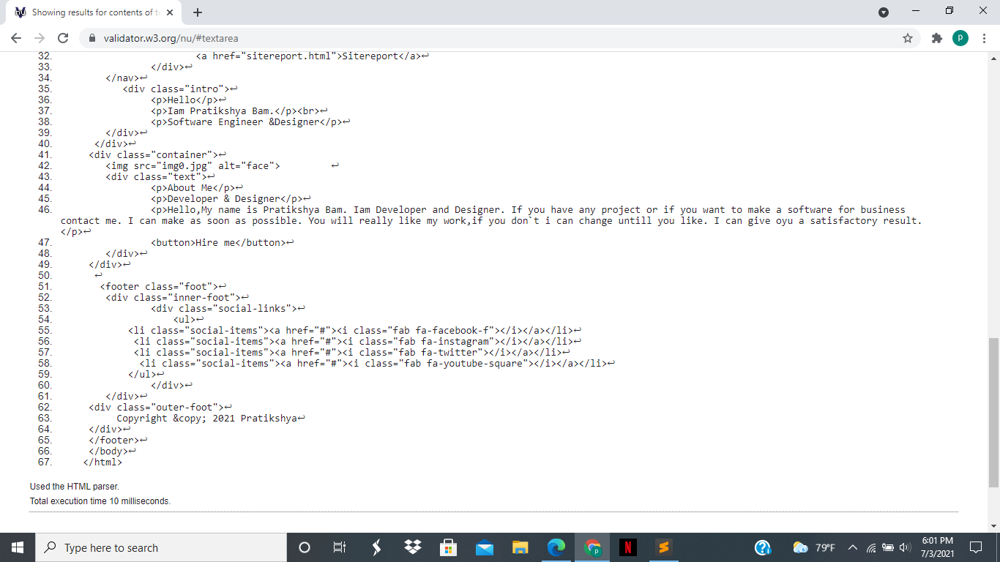

Module Experience:
In the module web development we can study from lecture and tutorials in our classes.In the tutorial class we have to do practically in computer that we do in our lecture classes. In the first day of the class we have study about how to make git hub account.After that we study about how to make repository,html and its elements, css syntax and adding web fonts and so on. This my 1st assignment in first year of study which is about the website development.
Summary of this assignment:
This report outlines the development of website using html and css. This report aims to clarify and justify all the decisions made during this process. The decisions have been condensed into functional and visual elements. Inside these terms, the various pages, links and query inclusions are discussed. The use of correct code and designing has also explained. Overall,this report aims to validate all design aspects of the website.
Site development:
For this assignment first of all, I have made a repository by name my_portfolio in github to push the codes regulary.Then i create a folder name project1 in which i can place my_portfolio file. After that I have open the sublime text editor to create new files in my_portfolio file such as index.html for building home page and style.css for styling the webpage and link both the home page with style page using link.
And four other pages are also created for webiste development such as portfolio.html,contact.html, cv.html and sitereport.html and these all pages are also link with each other using tag.


Home page:-
This page is a first page of the website from where we can connect to all other pages. Firstly, i have put background image in css then i have made navbar and then footer by using css for styling. I have given several div and classes to navbar and then go to css page to style the navbar to look attrative. I have used css and codes as per required to styling it. I have used black color background for navbar as well as footer. Furthermore in the footer section i have given the footer class as name foot. And then by making the list of the social media using fontawsome i have keep them in the footer section as social icons which i have put in center by using css. I have also written copyright in the last section. I have place navbar in the top of the website and aslo footer in the end of the website. After all of this i have to make body where i have to write about myself. For this first, i have written my name at the top and by using css i have keep it in the center and little lower. And then i have made container where i have written about myself in brief like my introduction. I have made the background color gray and put an image of myself in round strucutre and also a hire button as in the picture.
Portfolio page:-
Second is a portfolio page. As we know that we have to make header and footer section same in all pages so i have made them same as home page. In the porfolio page we have to put the work we have done till now but this is my 1st assignment so i didn`t have any work to show so as we asked in the assignment we have to put the placeholder image in the portfolio.html page. Like we commanded i have put the 4 placeholder images in this section and also style them in column. I have also a picture at the top to amke it little different. Then after the picture i give the heading name my portflio and aligned it in the center with the bold letter. Again i have placed the placeholder image in 2 columns with max-height 100%. And also name of the image under images. Lastly there is a footer section in the end of the page same as home page.
Contact page:-
Next is contact page. Here also my header or navbar and footer is same as before. I made a div of class called contact-section in wich i can make contact form box. Then i have written contact me text at top in the middle of the page by giving the css text-align:center. After that i have made the contact form which includes Name, Email, Phone and Message which all are in different block which are finalized by giving display, margin, padding,background for proper view. At the last of the form there is a submit button by the name send on the right side which is have blue color.
CV page:-
In this page we have to make Cv of ourself by giving details such as introduction,address,education,experiences,hobbies etc..In this page also header and footer are same as previous pages. Firstly i have place image in the top then name,about description, address,contact,skills,education,experiences and hobbies. In cv i have made 2 column. In 1st column i have placed image, profile, address, contact, skills and in 2nd column i have palced education, experiences , intrestes. I have used many div and classes for styling using css. Then after in css.style page i have name the classes and used code as per required such as display:flex, width, height, padding, margin, font-size, background color, position etc..
Furthermore, as asked in the assignment we have to make hamburger menu. For this below the header in body section i have input the checkbox and give div with class name nav-header and nav-title. And used css display:incline; in class name nav-header. Also used display: inline-block; font-size: 22px; color: #fff; padding: 10px 10px 10px 10px; in class name nav-title.
Problems:
- Existing website doesnot display well on mobile or tablet devices, rendering the content ineffective. so i have made the website responsive by using media quries in some and in some other i have just reduces the sizes so that it displays content beautifully across every devices.
- There was also a problems with the website designs first i have changed so many designs of home page and cv page which were not working correctly in my website and finally i have solved and finalized in this design which we can see now.
Validation Report:
Validation report contain the screenshot of the validated images of html amd css. Validation report means no amy error in html amd css files,

Reference:
Unsplash.com. n.d. Photo by Josh Rose on Unsplash. [online] Available at: